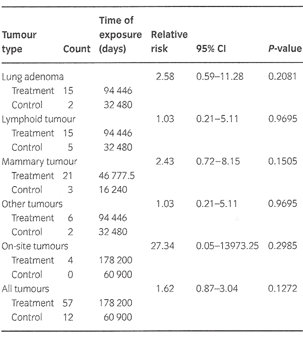
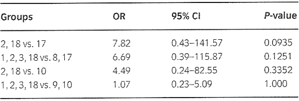
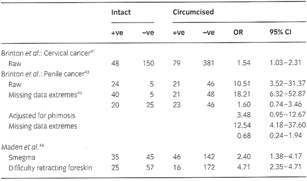

THE CIRCUMCISION REFERENCE LIBRARY
RS Van Howe*†, FM Hodges‡
†Department of Pediatrics, Michigan State University School of Human Medicine, Marquette, MI and ‡Berkeley, CA, USA
| Keywords cervical cancer, circumcision, medical history, penile cancer, smegma *Corresponding author, 1414 W. Fair Avenue, Suite 226, Marquette, MI 49855, USA, tel. +906 225 3925; fax +906 225 4838; E-mail: rsvanhowe@mgh.org Received: 5 April 2005, accepted 27 January 2006 DOI: 10.1111/j.1468-3083.2006.01653.x |
Abstract
Background Smegma is widely believed to cause
penile, cervical and prostate cancer. This nearly
ubiquitous myth continues to permeate the medical
literature despite a lack of valid supportive
evidence.
Methods A historical perspective of medical
ideas pertaining to smegma is provided, and the
original studies in both animals and humans are
reanalysed using the appropriate statistical methods.
Results Evidence supporting the role of smegma
as a carcinogen is found wanting.
Conclusions Assertions that smegma is
carcinogenic cannot be justified on scientific
grounds.
|
Smegma, the collection of material in the subpreputial space, is perhaps the most maligned of all human products. This normal substance has been causally linked to cervical, prostatic and penile cancers, all matters unhygienic, and any preputial pathology for which a clear aetiology has not been established. While these associations are widely endorsed and disseminated, the scientific evidence supporting these claims is flimsy, or non-existent. In this review we explore the physical attributes of smegma, its function, its epidemiology, and the attempts to demonstrate its carcinogenic capabilities. Finally, to develop a full appreciation of the current status of smegma in the scientific community, the interpretation of smegma’s role in health and in disease over the past two centuries needs to be chronicled.
The inner surface of the foreskin and the surface of the glans penis are mucosal membranes that must remain moist to function properly. Smegma beneficially serves to preserve subpreputial wetness. Smegma was once thought to result from secretions of ectopic sebaceous glands concentrated near the frenulum;1–4 however, subsequent histological study of hundreds of foreskins has failed to find these glands.5–7 Researchers at the Botkin’s Hospital in Moscow have asserted that smegma is produced from minute microscopic protrusions of the mucosal surface of the foreskin. According to these scientists, living cells constantly grow towards the surface, undergo fatty degeneration, separate off, and form smegma.8 The presence of fructose and acid phosphatase in subpreputial material and the absence of urea indicate the presence of seminal vesical and prostatic secretions, but exclude the presence of urine.9 Smegma also contains desquamated epithelial cells and the mucin content of the urethral glands of Littre.9,10
Smegma takes on the colour of the inner lining of the prepuce and is darker in highly pigmented individuals. In most men it is odourless,5 but it has been reported to harden into ‘smegma stones’ in men with extremely poor hygienic habits.11
Chemically, smegma contains immunologically active compounds such as cathepsin B, lysozyme, chymotrypsin, neutrophil elastase,12 cytokines,13 and hormones such as androsterone.14 Lytic materials, such as lysozyme, which probably originates from the prostate and seminal vesicles, 9 destroy bacterial cell walls and inhibit and destroy Candidal species.15
A 1958 chemical analysis found the dry weight of smegma to be 28.4% total lipids, with 0.8% phospholipids, 3.8% free cholesterol, 1.0% cholesterol esters and 22.8% neutral fats.16 Similarly, a 1973 analysis found smegma to be 26.6% fat and 13.3% protein, consistent with necrotic epithelial debris.5 Three distinct steroids have been identified in smegma.17
Smegma protects and lubricates the glans and inner lamella of the prepuce, facilitating erection, preputial eversion and penetration during sexual intercourse. This natural lubricant allows for prolonged intercourse and eliminates the need for artificial supplemental lubrication during normal coitus or masturbation.18
A study of 1000 Indian men without phimosis found that 198 had a very thin coating of smegma [19.8%, 95% confidence interval (CI) = 17.33–22.27], 141 had an obvious thin layer of smegma (14.1%, 95% CI = 11.94– 16.26), 41 had a 1-mm-thick layer of smegma (4.1%, 95% CI = 2.87–5.33), 20 had thick, caked-on smegma (2.00%, 95% CI = 1.13–2.87), and 600 had no smegma at all (60.00%, 95% CI = 56.96–63.04). 5 By contrast, Jayant evaluated Indian men and reported ‘++’ smegma in 44% of Hindus, 44% of Christians, 6% of Parsis, and 0% of Muslims. The number of men studied and the criteria for ‘++’ smegma were not provided.19
Of 64 men in India who required surgical correction for phimosis, only four (6.25%, 95% CI = 0.32–12.18) had smegma noted at surgery.20 Subsequently, in 1980, Parkash and Rao reported that: ‘In the absence of adhesions, no subpreputial collection was found in any patient with phimosis examined critically since 1972.’21
In a strongly pro-circumcision article, smegma was found in 19.2% of 3000 German men between 18 and 22 years of age. One-third of these had ‘a large amount’ of smegma. The men were graded as to the appearance of their foreskins. Class A had glans and coronal sulcus exposed, class B glans partially covered, class C glans entirely covered, but sulcus could be exposed by retraction, class D glans entirely covered, but only able to visualize meatus or part of glans on retraction, class E glans completely covered with rigid preputial opening. The prevalence of smegma increased with each class of foreskin: A = not reported, B = 11.8% (1/3 with a lot), C = 24.3% (1/3 with a lot), D = 35.3% (1/2 with a lot), E = ‘always present but impossible to confirm’.22
The results of a study of 347 genitally intact American men indicate that 70.53% (95% CI = 66.50–74.56) had no smegma on the glans penis and 66.67% (95% CI = 62.50–70.83) had no smegma in the coronal sulcus. Only 2.44% and 2.85% had marked amounts of smegma on the glans penis and in the coronal sulcus, respectively. There was a negative correlation between the amount of smegma noted and the degree of foreskin retractability (P <0.0001).23
In a study out of Salt Lake City, Utah, of 45 genitally intact males aged from 2 months to 52 years (mean 10.5 years), 13 were noted to have smegma on physical examination (28.89%, 95% CI = 15.65–42.13). The amount or thickness was not noted.24
In 9545 observations in 1968 Danish schoolboys aged 6 to 17 years, smegma was noted to be present in only 5.26%, with the lowest rate being in 6- to 7-year-olds (0.92%) and the highest rate in 14- to 15-year-olds (9.41%). The risk of smegma increased with age [odds ratio (OR) = 1.70, 95% CI = 1.57–1.85 for each 2-year stratum].25
In Japanese children, of 3238 boys aged 1 to 12 months, smegma was notable in only 16 (0.49%, 95% CI = 0.25– 0.74) and for 1283 boys aged 3 years, smegma was notable in only five (0.39%, 95% CI = 0.05–0.73).26
Of 93 British boys referred for a non-retractile foreskin, 10 were noted to have smegma (10.75%, 95% CI = 4.46– 17.05).27 In another British study of 120 boys referred to a paediatric urologist for circumcision, one was referred because of smegma.28
Mycobacterium smegmatis was originally isolated in smegma, but the association probably ends there. While Parkash et al. were able to find the ‘smegma bacillus’ in half of Indian men,5 in other studies, M. smegmatis is rarely isolated from the genital tract,29 nor is it the source of disease there.30 The organism is found in dirt and its original isolation from smegma was most probably coincidental.
Nearly all studies investigating the alleged carcinogenic properties of smegma were conducted in the 1940s and 1950s. In 1942, Fishman et al. obtained smegma from institutionalized elderly men and suspended it in lard. This was injected into the left axilla of 20 young mice. Likewise, smegma was introduced into the vaginas of 20 mice three times a week for 12 months. As a control, 10 mice had a 5% solution of 3,4-benzpyrene in cholesterol introduced into the vagina two to three times a week until a tumour appeared. One of the mice with the axillary injections developed a mammary adenocarcinoma, which the authors believed may have been spontaneous. None of the mice with vaginal insertion of smegma developed genital tumours, while all of the control mice developed tumours by 14 months.31
In 1947, Plaut and Kohn-Speyer placed horse smegma in surgically created ‘skin tunnels’ in 190 mice every 2 to 3 weeks, subcutaneously in 122 mice, and the non-soap fraction of horse smegma in skin tunnels in 88 mice. Horse smegma was used because human smegma could not be obtained in sufficient quantities. Cerumen was used as a control substance on ‘most’ of the 150 control mice. The resulting tumours are shown in Table 1. There was no significant association between tumours of any type and application of horse smegma.32
| Table 1 Tumours by type in murine model
performed by Plaut and Kohn- Speyer32 analysed by Poisson regression  |
This study suffers from two serious methodological problems. The first is missing data, as only 53% of the mice survived long enough to be evaluated. Survival was unequal between treated and control mice, with treated mice surviving longer (log-rank ÷ 2 = 19.73, P < 0.0001; hazard ratio 0.69, 95% CI = 0.57–0.84). This increased survival, while potentially an unheralded benefit of smegma application, would allow treated mice more opportunity to develop tumours. Using Poisson regression, none of the tumour types, alone or in combination with others, was found to be more common in treated mice (Table 1).
The second methodological flaw was the use of horse smegma. While horse smegma is available in prodigious quantities, the fatty acid patterns of horse and human smegma are widely divergent.33 Thus any extrapolations from horse to human smegma are fraught with danger. Although many circumcision advocates cite this article as supportive of smegma’s role as a carcinogen,34 the original authors concluded, ‘There is nothing to indicate the possible nature of the supposed carcinogenic factor in smegma.’32
The third study was an extension of the second study and was published in 1949. Unable to demonstrate that unadulterated smegma was carcinogenic, the investigators hypothesized that cholesterol in smegma was converted to carcinogens by M. smegmatis. The authors were unable to demonstrate the conversion of cholesterol to carcinogenic compounds that could not be attributed to the incidental molecular oxygenation.35
The fourth study was published by Pratt-Thomas et al. in 1956,36 with additional study groups being added and republished by Heins et al. in 1958.16 The authors used human smegma obtained from the South Carolina State Mental Hospital and injected it into the vaginas of female mice. The raw smegma was collected in sterile normal saline, centrifuged, and ground into a paste. Mice were deleted from final pathological evaluation if postmortem changes were extreme, if the animals had been partially devoured by cage mates, or if death occurred within a few days after they were committed to the experiment.
As with previous studies, the number of mice living long enough to be evaluated for tumour development was low (62.4%). Weekly vaginal injection of smegma (group 1) produced no tumours, but biweekly injection (group 2) yielded four invasive carcinomas, which the authors ‘judged to be significant’. When the biweekly vaginal injection experiment was repeated (group 18), however, the investigators were unable to replicate their earlier results.16 In a similar fashion, they were unable to induce any tumours by injecting smegma into skin tunnels (group 11) or with biweekly vaginal injection of smegma into another strain of mice (group 20). We performed a post hoc analysis using two control groups: group 17 in which a clean speculum and obturator were vaginally inserted, and groups 9 or 10 in which dermoid cyst material was inserted. Using intent-to-treat analysis the various comparisons are shown in Table 2.
| Table 2
Comparison of treatment and control groups in Pratt-Thomas
et al.36 and Heins et
al.16 using
intention-to-treat analysis  *Group 1, weekly vaginal injection of smegma; group 2, biweekly vaginal injection of smegma; group 3, injection of smegma with vaginal ligation; group 8, sterile smegma with vaginal ligation; group 9, dermoid cyst material with vaginal ligation; group 10, biweekly cyst material vaginally; group 17, insert clean speculum and obturator; group 18, raw smegma biweekly vaginal injection. |
Two of the tumours in group 2 were described in questionable terms, but were included in these calculations, none of which yielded a statistically significant result. The authors doubted whether dermoid-cyst material was an appropriate control, stating, ‘It [dermoid-cyst material] was not sufficiently different from smegma to qualify as a control agent, but we feel that its ability to produce epithelial hyperplasia and even carcinoma in these mice does not nullify the significance of a similar effect produced by smegma; rather, because of the similarity between the two, it reinforces their importance.’ We disagree with this interpretation; their data fail to provide any evidence of smegma’s carcinogenic potential regardless of the control group used.
The final animal study was published by Indian researchers Reddy and Baruah in 1963.37 Twenty-nine male and 26 female mice had a paste of fresh human smegma applied to their genitals and bared skin three times weekly for 16 months. In the females, the smegma was rubbed onto the vagina and cervix by rotating a fine glass rod. A control group of 10 male and 10 female mice had sterile saline applied using the same methods and frequency. No malignancies developed in any of the animals.
While cancer produced in one species of animal does not necessarily extrapolate to other species,16 none of the experiments in mice provided any evidence that smegma is a carcinogen.
The first study to attempt to find a relationship between smegma and disease in humans was published in 1968. Believing they had made a breakthrough discovery, the authors reported four smegma specimens from 198 male subjects that yielded herpes simplex virus on viral culture. Not surprisingly, all four men had clinical evidence of active genital herpes.38
In 1973, Terris et al. looked for an association between the amount of smegma on a woman’s primary sexual partner and cervical cancer, carcinoma in situ, or cervical dysplasia. No association could be demonstrated for smegma on the glans penis (OR = 0.81, 95% CI = 0.55– 1.20 adjusted for cervical pathology), nor for smegma in the coronal sulcus (OR = 0.74, 95% CI = 0.51–1.09 adjusted for cervical pathology). Interestingly, smegma on the glans was associated with a decreased risk of cervical dysplasia (OR = 0.47, 95% CI = 0.22–0.98).23
In an Indian study, 80 consecutive men being treated for histologically proven penile cancer and 80 control men without penile cancer were compared. The wives of 44 cases were examined for cervical dysplasia and carcinoma. All were negative. The authors concluded that ‘the importance of smegma in the causation of cervical cancer is probably minor’.39
The abstract from a study published in Chinese in 1986 notes that risk factors for cervical cancer included sexual activity, smegma and cervical erosion.40 The magnitude of the associations and the source of the smegma are not provided in the abstract, so it is unknown whether the abstract reflects findings made in the study or merely repeats the claim because it was the paradigm at the time.
Brinton et al. reported on women with cervical cancer in Panama, Costa Rica, Columbia and Mexico. Detection of smegma under the foreskin of the regular sexual partner of these women was associated with cervical cancer (OR = 1.54, 95% CI = 1.03–2.31, Fisher’s exact test P = 0.0407).41 Roy et al. screened women in Calcutta for cervical cytology. The study failed to support the smegma theory of cervical carcinoma. 42
In 1991 Brinton et al. published the results of potential risk factors for penile cancer in men in China. Using raw data, five cases had no smegma, 25 had smegma, and 15 were unreported. For the control men, 46 had no smegma, 21 had smegma, and two were unreported. Using the raw data the association is significant (OR = 10.51, 95% CI = 3.52–31.37). This should not be taken at face value. There is a serious missing data problem. If extreme assumptions are used with the missing data, one extreme yields a result that is not statistically significant (see Table 3). Likewise, the smegma association is more easily explained by the association of phimosis and penile cancer. When controlled for phimosis using logistic regression, the association between smegma and penile cancer lessens considerably (OR = 3.48, 95% CI = 0.95– 12.67) and is no longer statistically significant. Missing data are still a problem in this analysis with one extreme yielding a result in the opposite direction (see Table 3). The smegma finding could also be confounded by substandard general hygienic practices and is evidence thereof.43
In 1993, Maden et al. published their comparisons of men with penile cancers (carcinoma in situ and invasive carcinoma) in the Pacific North-West to controls. We must emphasize that most of the subjects were elderly, poor, alcoholic, uneducated smokers with substandard and unhealthy hygienic and lifestyle practices and a history of venereal disease. Smegma and difficulty in retracting the foreskin were both associated with penile cancer (Table 3); however, no attempt was made to control for retractability or phimosis. As carcinoma in situ and invasive carcinoma can result in preputial scarring and difficulty in retracting the foreskin and this difficulty in retracting can result in smegma accumulation, smegma accumulation could have resulted from the carcinomas rather than vice versa. This study also relied on questioning rather than examining the subjects, so there may be an unknown reporting bias.44
 |
Table 3 Association between presence of smegma and cancer risk. Brinton et al. studies of cervical cancer and penile cancer41,43 and Maden et al. 44 |
Abraham Ravich credits himself with originating the smegma theory of disease in 1941,45 but he was not the first to pathologize smegma. Medical concern over smegma first emerged during the masturbation hysteria in the nineteenth century. In the prebacteriological age, smegma was not considered an unclean, disease-causing substance; rather, it was acknowledged as a natural element of male sexuality.46 In an age when all sexual sensations and activities were discouraged and demonized, however, smegma was believed to stimulate erection and enhance orgasm. The highly respected French physician, Claude- François Lallemand (1790–1853), pronounced that smegma could provoke erections that would lead to ‘disastrous pleasures’.47 The power of an accumulation of smegma to erogenously stimulate the nervous system was consistent with the accepted theory of reflex ‘irritation’, a term then understood to mean ‘stimulation’ rather than its modern connotation of discomfort. Thus a boy stimulated by smegma would ‘relieve himself of this irritation by rubbing the foreskin over the glans, and as a consequence he may develop the habit [of masturbation]’.48
The American physician Roberts Bartholow (1831– 1904) formulated the theory that smegma produced ‘hyperæsthesia’ of the glans. Bartholow argued that the level of sensitivity of the natural penis (where the foreskin is present and covers the glans) to be abnormal and pathologically exacerbated. 49
In 1914, erroneous medical beliefs about smegma were compounded by influential American urologist and eugenicist Abraham Wolbarst (1872–1952), who updated the demonization of the foreskin and promulgated the idea that it harboured ‘carcinogenic secretions’. Wolbarst’s lifelong crusade to promote circumcision was initially provoked as a means of countering contemporary medical concerns over the unsanitary and occasionally deadly aspects of ritual Jewish circumcision, specifically the prescribed sucking of blood from the wound. Rather than being unsanitary, Wolbarst countered that circumcision was, in fact, so sanitary that it should be imposed on all males. Wolbarst’s definition of ‘sanitation’, however, was more heavily suffused with the antimasturbation hysteria concept of ‘moral sanitation’ than concern for physical cleanliness. Referring to smegma, Wolbarst made the bigoted characterization of ‘gentiles’ of even middle-class standing as being unable to ‘pay proper attention to the cleansing of their genitals’. Wolbarst thundered in JAMA: ‘Times innumerable, in my experience, the stench arising from the confined and retained balanic secretions has been almost unbearable’, and thus ‘the argument for circumcision as a measure of hygiene must be apparent to any but a man deprived of his olfactory sense’.50
Additionally, drawing on the pervasive and unchallenged nineteenth-century medical dogma that the ‘irritation’ caused by the foreskin was a potent cause of epilepsy, convulsions, insanity, masturbation, spinal paralysis and acute melancholia,51 in 1926 and again in 1932 Wolbarst simply inserted penile cancer into that list by accusing the foreskin of maintaining a ‘state of chronic irritation’, inflammation, ‘erosions, excoriations, and raw patches’.48,52 Just as nineteenth-century physicians had blamed the foreskin for retaining secretions that heightened the sensitivity of the penis and stimulated the nervous system to produce ‘reflex diseases’, Wolbarst insisted that the foreskin caused the diseases that were of concern to the medical profession of his era, namely venereal disease and cancer.
Although the carcinogenicity of smegma has never been demonstrated, smegma has been cited as a carcinogen by at least one article in the 1940s and 1950s, nine articles in the 1960s, four articles in the 1970s, seven articles in the 1980s, 17 articles in the 1990s, and two articles in the present decade. It appears as though the myth has gained favour with time. Some researchers, when mentioning smegma, are unconvinced about its impact on disease, yet are compelled to include smegma in their discussion of cancer aetiology. We found at least 17 articles that used this approach. Most disturbing is the continued mention of smegma as a risk factor for penile cancer in recent textbooks. One of the textbooks fails to mention smoking as a risk factor,53 despite clear evidence of an association between smoking and penile cancer.44,54,55
Like any myth, the harm attributed to smegma has evolved over time and with retelling. For example, a case report of squamous cell carcinoma of the penis in a circumcised man published by Ross et al. in 1998 states that smegma may be causative of penile cancer after being converted to a carcinogen by M. smegmatis.56 To support this statement, the authors cited a report published in Urology by members of the urology department at the Mayo Clinic.57 In this 1993 study of the role of human papillomavirus in penile carcinomas, the Mayo urologists stated, in the discussion section, that previous studies had shown ‘that application of smegma from horses (which have a high incidence of penile cancer) to the skin of mice induces condylomata acuminata and SCC [squamous cell carcinoma]’ and that ‘that smegma sterols may be converted to carcinogenic sterols by Mycobacterium smegmatis, which is present from the first few days of life’. Instead of citing the primary studies to support these statements, which do not exist, the authors cite an opinion piece written by a well-known circumcision advocate.34 Having done so, they even managed to misquote their source.
Even though their inaccurate portrayal of smegma was exposed in a pair of letters to the editor,58,59 this did not deter the Mayo urologists. Similar inaccuracies were found in a 1995 study published in the Journal of Urology.59 Avoiding the word ‘smegma’, a 1998 study published in Urology by the same the group referred to the subpreputial space as a ‘cocoon of carcinogenesis’ and host to ‘a multitude of carcinogenic factors and cofactors’ without identifying any of the factors or providing any references to support their assertions.60
It is impossible to assert a causal relationship based on retrospective data. Hill developed criteria for assessing whether a strong case can be made for causality based on retrospective data.61
There have been very few associations documented between smegma and disease that were statistically significant let alone having a high odds ratio.
Study results have fairly consistently failed to show an association between smegma and genital cancers.
Findings of an association between smegma and genital cancers may in fact be due to phimosis and hygienic practices. In studies where phimosis was adjusted for, smegma was not a contributing factor.
Accumulation of smegma prior to the development of genital cancers has never been demonstrated and a logical argument, as presented above, suggests that smegma accumulation may be the result of penile cancers.
If smegma is to be put forth as a cause of genital cancers, it should be shown that more smegma translates into more genital cancers. A demonstration of this has never been undertaken. Given the small percentage of men with smegma on examination, the even smaller percentage of men with significant accumulations of smegma, and extreme rarity of penile cancer, such a study would be nearly impossible to accomplish. Women are known to produce more smegma than males, so one would expect more vulvar carcinomas in women than penile cancer in men. This is not the case.62
No known carcinogens have been isolated from smegma, even after incubation with M. smegmatis.
Recent research has shown that the foreskin, other than having additional tissue that eventually may become cancerous, is not a factor in the development of penile cancer. The risk comes from the development of phimosis,63 and perhaps more specifically the result of balanitis xerotica obliterans.64–66 Likewise, the development of cervical cancer is most strongly linked to human papillomavirus infections, while approximately half of penile cancers appear to be due to the virus.
Laboratory studies with mice have failed to demonstrate the carcinogenic properties of smegma.
There are no other natural human secretions produced in physiological quantities that have been shown to induce cancer. Likewise, as the development of the male and female external genital organs is similar, it is illogical that 90% of carcinomas of the penis develop from the glans and the prepuce compared to only 25% clitoral involvement in females. If the agent of these carcinomas is similar, the distribution of the carcinomas would be expected to follow the embryological development of the organs, but they do not.62
If the smegma theory were correct, penile cancer rates and cervical cancer rates should have fallen with increasing neonatal circumcision rates in North America.16 This has not happened. Despite the introduction of Pap smears, cervical cancer rates have risen because of an increase in human papillomavirus infections, which cause of most of these cancers. Similarly, the USA, rather than having falling penile cancer rates, has a higher penile cancer rate than many Scandinavian countries where routine neonatal circumcision is not performed.62,67,68
The evidence does not support the theory that smegma is a cause of genital cancer.
The smegma theory of disease was best stated by Boczko and Freed: ‘Smegma, a sterol, produced by Tyson’s glands in the epithelium of the retroglandular sulcus, has been implicated as the causative agent. It may be converted to a carcinogen by the action of the Mycobacterium smegmatis.’69
From the medical literature we have found that smegma is not a sterol, that there are no Tyson’s glands, that smegma is not converted to a carcinogen by M. smegmatis, and that M. smegmatis is not part of the normal genital flora. The myth is sustained only by its popularity among circumcision advocates.
Some have extrapolated the smegma theory by hypothesizing that men with inadequate circumcisions may be at risk for cancer because smegma can accumulate under any foreskin remnants.70 In similar fashion, Abraham Ravish expanded the smegma theory to indict smegma as the cause of prostate cancer by travelling upstream through the urethra to invade the prostate gland.71 Davis-Daneshfar and Trueb speculated that chronic infection with M. smegmatis is the cause of plasma cell (Zoon’s) balanitis,72 but Yoganathan et al. could not isolate the organism in any of their cases.73
Some have shown an unwillingness to abandon the smegma theory. When it was postulated that sperm proteins caused cervical cancer, it was the smegma mixing with the sperm proteins that were to blame.74 When diaphragm use was found to decrease cervical cancer, it was postulated that it provided a barrier to contact with smegma.75 When it was clear that cervical cancer resulted from a viral infection, some still postulated that smegma was a necessary part for the viral exposure to be carcinogenic.45 Those promoting the ‘cocoon’ theory prefer to think of smegma as a cofactor in the development of penile cancer. There are two reasons to dismiss this speculation. First, there is no scientific evidence to support the assertion. Second, it is analogous to declaring saliva a cofactor in the development of lip cancer in those who chew tobacco. Both saliva and smegma are bodily fluids that serve a function and, like any other bodily fluid, are present in organs than can develop a malignancy.
The purpose of the scientific method is to distinguish between wishful thinking, strongly held opinion, and provable fact. The smegma theory of disease, which began as wishful thinking on the part of circumcision zealots such as Abraham Wolbarst and Abraham Ravich, has evolved into irrefutable dogma, but as modern physicians, we need to recognize that, until proved otherwise, smegma is harmless.
http://www.cirp.org/library/disease/cancer/vanhowe2006/